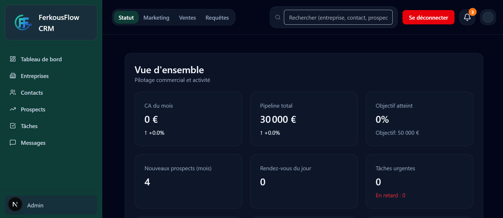

🔧 Projet CRM
Application CRM SaaS full-stack pensée pour centraliser les données commerciales, piloter l'activité et visualiser les indicateurs clés dans un dashboard analytique.
📋 Contexte du projet
Développement d'une application CRM SaaS dans le cadre du cursus MIAGE. Le projet couvre la modélisation fonctionnelle, la conception des données, l'authentification, la visualisation des KPI et le déploiement en ligne d'une application exploitable par une équipe commerciale.
🧰 Technologies utilisées
Le projet s'appuie sur une stack moderne orientée produit SaaS, avec une séparation claire entre interface, services backend et persistance des données.
- Frontend : React / Next.js / TypeScript
- Backend : Supabase
- Base de données : PostgreSQL
- Graphiques : Recharts
- Design : Tailwind CSS
- Déploiement : Vercel
✨ Fonctionnalités principales
Le CRM couvre les besoins essentiels d'un cycle commercial, depuis la qualification des opportunités jusqu'au suivi analytique de l'activité.
- Gestion des leads
- Gestion des entreprises
- Gestion des contacts
- Gestion des tâches commerciales
- Dashboard analytique avec graphiques
📺 Démonstration du dashboard
Capture du dashboard principal du CRM, avec sa navigation laterale, ses indicateurs cles et son espace de pilotage commercial.

🎯 Objectifs
- Centraliser entreprises, contacts et prospects dans une interface unique
- Suivre les interactions commerciales et les tâches quotidiennes
- Fournir un dashboard lisible avec KPI et graphiques métier
- Déployer une application exploitable depuis le web
⚙️ Architecture du projet
L'application suit une architecture SaaS simple et robuste, où chaque couche a un rôle bien défini.
Le frontend Next.js gère l'expérience utilisateur et les vues métier. Supabase prend en charge l'authentification et les accès applicatifs, puis PostgreSQL stocke les données métier de façon structurée et sécurisée.
📈 Résultats
- Application full-stack déployée et accessible en ligne
- Dashboard analytique avec indicateurs commerciaux
- Base PostgreSQL structurée pour un usage CRM
- Documentation projet prête pour soutenance et portfolio
📚 Documentation
La documentation du projet détaille l'installation, les choix techniques et le rapport de conception fonctionnelle et technique.
🚀 Accès à l’application
L'application de démonstration est disponible en production sur Vercel. Le dépôt GitHub permet également de consulter le code source complet.